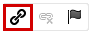
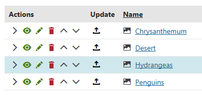
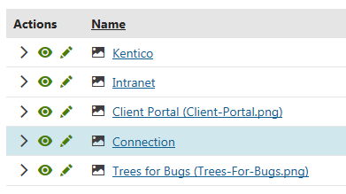
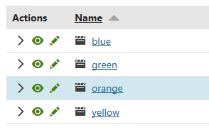
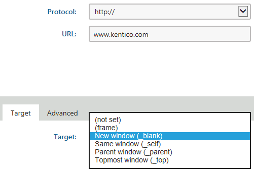
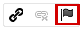
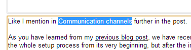
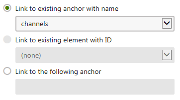

Working with links and anchors
You can make certain sections of the text clickable by creating hyperlinks. Once clicked, these links navigate users to different pages or, as described in working with anchors, to different sections of a page.
Working with links
You can create the following types of links in the editor:
Attachments links – allow you to create links to the attachments of the page that you are currently editing.
Content links – allow you to create links to files stored in the content tree of any of the sites running in the system.
Media libraries links – allow you to create links to content stored in media libraries.
Web links – allow you to create links to different websites.
E-mail links – allow you to create email links that create a new email in the user's default email client and automatically fill in the fields that you specify.
Anchors links – anchors allow you to navigate users to different sections of the same page.
Placing attachments links
With your mouse, c lick in the text where you want to create a link or mark the text that you want to make into a link.
In the editor toolbar, click on the Insert/Edit link button. An Insert link dialog opens.

Inserting linkSwitch to the Attachments tab.
(Optional) If the attachment that you want to create a link to isn't attached to the page, use the Upload button to attach it.
 Select the attachment that you want to create a link to.
Select the attachment that you want to create a link to.
Selecting a target for an attachment link(Optional) If you haven't marked any text that you want to make into a link, fill in the Link text field on the General tab.
On the Target tab, specify how the link opens once users click it:
(not set) – default setting, opens the link in the same browser window or tab as the page.
(frame) – opens the link in the frame specified in the Target frame name field.
New window (_blank) – opens the link in a new browser window.
Same window (_self) – opens the link in the same browser window or tab as the page.
Parent window (_parent) – opens the link in the browser window the current page is nested in.
Topmost window (_top) – opens the link in the browser window that is positioned on the top.
Click Save & Close. The system creates the attachment link.
Save the page you are editing.
Now, the attachment opens when a user click the link on the page.
Placing content links
With your mouse, c lick in the text where you want to create a link or mark the text that you want to make into a link.
In the editor toolbar, click on the Insert/Edit link button. An Insert link dialog opens.
Inserting linkSwitch to the Content tab.
In the Site drop-down list, specify the site on which the content that you want to link to is.
In the Content tree, navigate to where you want the link to lead to.
-
Select the specific page that you want to create a link to.
(Optional) If you haven't marked any text that you want to make into a link, fill in the Link text field on the General tab.

Selecting a target for a content linkOn the Target tab, specify how the link opens once users click it:
(not set) – default setting, opens the link in the same browser window or tab as the page.
(frame) – opens the link in the frame specified in the Target frame name field.
New window (_blank) – opens the link in a new browser window.
Same window (_self) – opens the link in the same browser window or tab as the page.
Parent window (_parent) – opens the link in the browser window the current page is nested in.
Topmost window (_top) – opens the link in the browser window that is positioned on the top.
Click Save & Close. The system creates the attachment link.
Save the page you are editing.
Now, when a user clicks on the link, they are navigated to the page that you specified.
Placing media libraries links
With your mouse, c lick in the text where you want to create a link or mark the text that you want to make into a link.
In the editor toolbar, click on the Insert/Edit link button. An Insert link dialog opens.
Inserting linkSwitch to the Media libraries tab.
In the Site, Group and Library drop-down lists, specify the media library in which is the content you want to link to.
(Optional) Use the Upload button to add the file you want to link to into the media library.

Select the media library item that you want to create a link to.
Selecting a target for a media library link(Optional) If you haven't marked any text that you want to make into a link, fill in the Link text field on the General tab.
On the Target tab, specify how the link opens once users click it:
(not set) – default setting, opens the link in the same browser window or tab as the page.
(frame) – opens the link in the frame specified in the Target frame name field.
New window (_blank) – opens the link in a new browser window.
Same window (_self) – opens the link in the same browser window or tab as the page.
Parent window (_parent) – opens the link in the browser window the current page is nested in.
Topmost window (_top) – opens the link in the browser window that is positioned on the top.
Click Save & Close. The system creates the attachment link.
Save the text you are editing.
Now, the media library opens when a user click the link on the page.
Placing web links
With your mouse, c lick in the text where you want to create a link or mark the text that you want to make into a link.
In the editor toolbar, click on the Insert/Edit link button. An Insert link dialog opens.
Inserting linkSwitch to the Web tab.
In the Protocol drop-down list, select the protocol on which the website you link to runs.
(Optional) If you haven't marked any text that you want to make into a link, fill in the Link text field.

Specifying a web linkOn the Target tab, specify how the link opens once users click it:
(not set) – default setting, opens the link in the same browser window or tab as the page.
(frame) – opens the link in the frame specified in the Target frame name field.
New window (_blank) – opens the link in a new browser window.
Same window (_self) – opens the link in the same browser window or tab as the page.
Parent window (_parent) – opens the link in the browser window the current page is nested in.
Topmost window (_top) – opens the link in the browser window that is positioned on the top.
Click Save & Close. The system creates the web link.
Save the text you are editing.
Now, when a user clicks on the web link on the page, the browser opens the new address as you specified.
Placing e-mail links
With your mouse, c lick in the text where you want to create the link or mark the text that you want to make into an e-mail link.
In the editor toolbar, click on the Insert/Edit link button. An Insert link dialog opens.
Inserting linkSwitch to the E-mail tab.
(Optional) If you haven't marked any text that you want to make into a link, fill in the Link text field.
Fill in the fields that you want the user to have prefilled when they click the e-mail link.
Click on Save & Close. The system creates the e-mail link.
Save the text you are editing.
Now, when a user clicks on the e-mail link on the page, their default e-mail client creates a new message and prefills the fields that you specified.
Working with anchors
Anchor hyperlinks allow you to create links to certain parts of a text. You can then use these links to navigate users to different sections of a page, for example, to different headers. Once a user clicks a link pointing to an anchor, the page scrolls to where you placed the anchor. You can place anchors anywhere in a text area.
Placing anchors
You can insert an anchor anywhere in a text area.With your mouse, c lick where you want to place the anchor.
In the editor toolbar, click on the Anchor button. An anchor properties dialog appears.

Inserting an anchorFill in the Anchor Name.
Click on OK. The system places the anchor in the text.
Save the text you are editing.
You can now link to the anchor as described below.
Linking to anchors
Mark the text that you want to use as a link to the anchor that you created.

Marking the text to link to an anchorIn the editor toolbar, click on the Insert/Edit link button. An Insert link dialog opens.
Inserting linkSwitch to the Anchor tab.
In the Link to existing anchor with name, choose the anchor that you created previously.

If you are creating a link to an anchor that doesn't yet exist, you can type it's name in the Link to the following anchor field.
Linking to an anchorClick Save & Close. The system creates the link to the anchor that you specified on the page.
Save the text you are editing.
Now, when a user clicks on the link on the page, the page scrolls to the anchor.